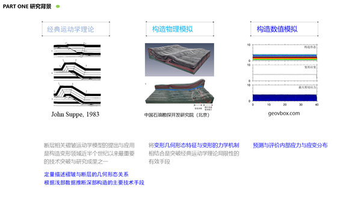
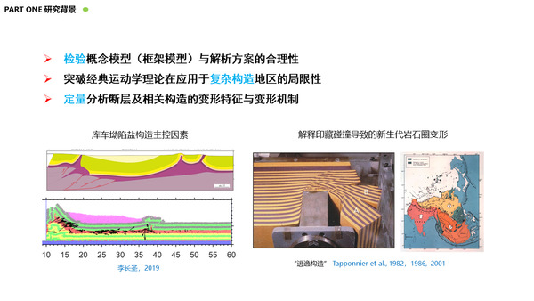
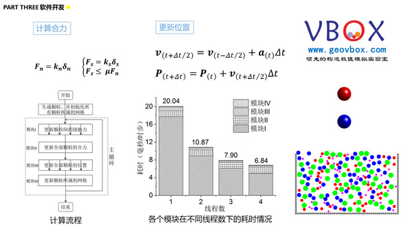
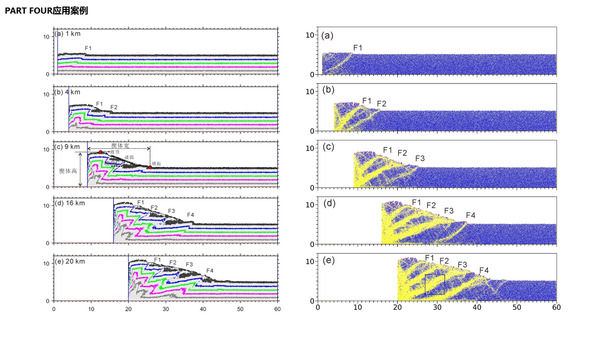
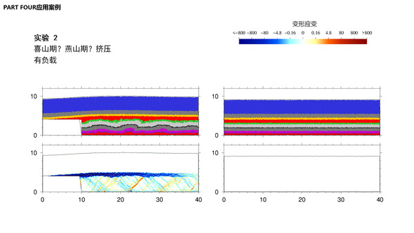

第十二届全国石油地质实验技术学术会议 简介
石油地质实验技术在油气勘探开发中具有重要的作用。近年来，我国油气勘探开发面临一些新的挑战，对石油地质实验技术的发展提出更高要求。为了进一步推动我国石油地质实验技术的创新发展，促其在我国油气勘探开发中发挥更好的作用，中国石油学会石油地质专业委员会、中国石油学会石油科技装备专业委员会、中国地质学会石油地质专业委员会和石油地质勘探专业标准化委员会联合发起召开“第十二届全国石油地质实验技术学术会议”，初步决定于2020年11月11-13日召开，现将会议具体事项通知如下：
一、主办单位：
- 中国石油学会石油地质专业委员会
- 中国石油学会石油科技装备专业委员会
- 中国地质学会石油地质专业委员会
- 石油地质勘探专业标准化委员会
二、承办单位：
- 中国石油勘探开发研究院
- 中国石油油气地球化学重点实验室
- 中国石油油气储层重点实验室
- 中国石油盆地构造与油气成藏重点实验室
- 陆相页岩油气成藏及高效开发教育部重点实验室
三、会议主题及专题内容
- 会议主题：石油地质实验新技术、新方法及应用
- 专题内容：
- 地球化学实验新技术、新方法及应用
- 储层与地层实验新技术、新方法及应用
- 油气成藏实验新技术、新方法及应用
- 非常规油气地质实验新技术、新方法及应用
- 开发地质、实验装备、大数据及实验管理
报告题目：基于离散元的构造变形数值模拟实验技术
- 第五分会场：开发地质、实验装备、大数据及实验管理
- 时 间：2020年11月13日周五8:40-8:55
- 地点：江西省南昌市 江西省委滨江宾馆 11号楼四层会议厅
- 报告人：李长圣 中国石油勘探开发研究院
内容简要：
- 研究背景：构造模拟的意义；
- 理论方法：离散元理论；
- 软件开发：离散元软件VBOX的开发；
- 应用案例：
- 基于离散元的构造定量分析方法
- 伸展断层传播褶皱
- 川西北地区双鱼石区块膝折褶皱离散元数值模拟
- 结论：
- 教学：帮助学生理解构造过程，提高构造地质的学习兴趣。
- 科研：定量分析构造变形的主控因素，揭示构造演化过程明确构造发育的时间。
- 优化构造解释方案：限于地震资料精度、地质构造复杂性，作为一种实验方法，指导、优化构造解释方案。
- 双鱼石：负载抑制断层发育，膝折褶皱形成于燕山期或者喜山期。
摘要
数值模拟与理论分析和科学实验并称为现代科学研究的三大支柱，在构造地质学领域，从超大陆裂解的地球动力学到盆地构造变形的几何学与运动学研究，数值模拟都已成为重要的手段。
近年来，随着离散元理论和计算机技术的发展，离散元方法(Cundall and Strack, 1979)已经广泛应用到不同尺度的构造模拟中。相较于传统的沙箱模拟方法，离散元可以更精确地控制实验的边界条件，定量的分析构造变形过程，有助于从细观尺度深入认识地层力学性质及变形机制。离散元方法采用离散颗粒表征符合实际物理力学性质的岩石，能有效分析含有大量间断的问题。二十世纪九十年代以来，离散元被广泛应用于解决构造相关的地质问题。例如，分析盐刺穿过程中沉积盖层的破裂机制，研究地层内聚力对构造形态及应力应变分布的影响(Morgan,2015)。，揭示水平挤压环境下滑脱层的对构造变形过程中的应变分布变化与裂缝生成规律，解析裂陷盆地演化过程中分层伸展叠加变形的动力学演化过程，分析茅东断裂带作为断陷盆地在现今区域应力场作用下反转构造特性及正断层反转控震机制，揭示纯走滑拉分盆地发育过程中的断裂扩展和连接过程, 探讨库车前陆冲断带西部盐构造形成的控制因素及其形成机理等(李长圣,2019)。
Schreurs et al.2016对比了全球多个物理模拟实验室的挤压构造实验，结果显示在采用相同的实验条件和方法下，不同的实验模拟结果无法完全一致。而，离散元在相同的初始条件（初始模型颗粒位置和半径一样）和边界条件下，试验结果均具有可重复性。其中，离散元的材料属性通过细观参数标定，可选择的材料较多。并且，所有的变量都可以实时监测，如位移、应力、应变、速递和能量等信息。在物理模拟中，变形需要通过图像分析（如粒子图像测速法）、激光扫描（微型激光测高）、利用计算机x射线断层扫描技术进行体扫描。如果没有这些设备，则只能通过对模型侧面进行拍照来观察模型侧面形变，或切割模型观察其内部形变。而离散元则可以给出每个变形阶段的所有信息，用这些信息可以计算出系统的应力应变场。同时，同一初始模型，模拟结果一致，利于单因素变量（如挤压速率、古隆起、先存断层等）研究。
综上，离散元数值模拟方法在构造形态、断裂预测及应力应变的定量分析上存在明显的优势。众多学者已经将离散元引入构造变形的模拟中，但分析的重点多集中于构造几何形态的定性解析。本文结合一个典型的挤压构造离散元数值模拟试验，模拟水平挤压环境下构造的形成过程，对变形过程中的应力、应变分布变化与裂缝生成规律进行分析。结果表明：（1）裂缝与断层形成有密切关系，局部区域内聚集的大量裂缝是产生断层的诱因。（2）体积应变可以表征裂缝类型（拉张或压缩），变形应变可以区分正向和反向逆冲断层。（3）平均应力大小与地形起伏呈正相关，最大剪切应力持续在将要形成的新断层处累积，直至该新断层形成，剪切应力开始消散，继续往前传播，在下一个将要形成的新断层处累积。该成果表明离散元方法在应力应变分析与裂缝预测研究中具有巨大潜力。
    部分PPT
致谢
其中，应力应变分析代码修改自 RICE 大学Julia K. Morgan教授提供的计算脚本，在此感谢。
参考文献
李长圣 (2019) 基于离散元的褶皱冲断带构造变形定量分析与模拟. 博士论文. 南京大学. 推荐下载 最新修订版 提取码dgyc李长圣,尹宏伟,刘春,蔡申阳.(2017)共享内存式并行离散元程序的设计与测试.南京大学学报(自然科学),53(06):1161-1170.
梁瀚,冉崎,狄贵东,等.(2019)川西北地区双鱼石区块栖霞组膝折褶皱的发现及其油气意义.天然气勘探与开发,42(04):1-7
Cundall P A, Strack O D. 1979. A discrete numerical model for granular assemblies. Geotechnique, 29: 47-65.
Morgan JK (2015) Effects of cohesion on the structural and mechanical evolution of fold and thrust belts and contractional wedges: Discrete element simulations. Journal of Geophysical Research: Solid Earth 120:3870-3896.
Schreurs G, Buiter S J, Boutelier J, et al. Benchmarking analogue models of brittle thrust wedges. Journal of structural geology, 2016,92:116-139.